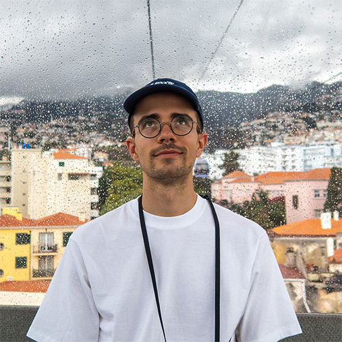

<div>
    <div style="text-align: center;">
        
        <br /><br />
        <h4>Pierre Faure--Giovagnoli<sup>1,2</sup></h4>
        <p>Ph.D. Student in Computer Science</p>
        <a href="https://liris.cnrs.fr/" target="_blank"><i><sup>1</sup>LIRIS UMR 5205, Villeurbanne, France</i></a><br/>
        <a href="https://www.cnr.tm.fr/" target="_blank"><i><sup>2</sup>Compagnie Nationale du Rhône, Lyon, France</i></a>
    </div>
    <hr />
    <div style="text-align: left; padding: 10px;">
        
        <span>24 y.o.</span>
        <div style="height:10px"></div>
        
        <span><a href="https://en.wikipedia.org/wiki/Lyon" target="_blank">Lyon, France</a></span>
        <div style="height:10px"></div>
        
        <span><a href="https://www.linkedin.com/in/pierrefg/" target="_blank">LinkedIn</a></span>
        <div style="height:10px"></div>
        
        <span><a href="https://github.com/PierreFG" target="_blank">Github</a></span>
        <div style="height:10px"></div>
         
        <span><a href="mailto: pierre.faure--givagnoli@insa-lyon.fr" target="_blank">pierre.faure--giovagnoli@insa-lyon.fr</a></span>
    </div>
</div>